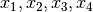
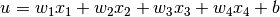
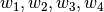
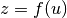
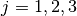
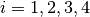
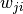
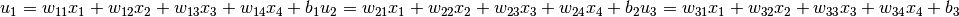

1. 機械学習のまとめ¶
| 著者: | Masato |
|---|
1.1. 概要¶
機械学習に必要な知識についてまとめてあります。参考文献葉は
- Christopher M. Bishop “Pattern Recognition and Machine Learning”
- 機械学習プロフェッショナルシリーズ
- 人工知能学会「深層学習」
からまとめています。現在は深層学習に向けた知識をまとめるので、主に取り扱っているのはニューラルネットワークです。
1.2. 機械学習とは¶
1.3. 確率分布¶
1.4. 線形回帰モデル¶
1.5. 線形識別モデル¶
1.6. ニューラルネットワーク¶

順伝搬型ネットワーク¶
ユニットの出力¶
順伝搬型ネットワーク(feedforward neural network)は、層状に並べたユニットが隣接層間でのみ結合した構造を持ち、情報が入力側から出力側に一方向にのみ伝搬するニューラルネットワークである。文権によっては、 多層パーセプトロン(Multi-layer Perceptron)と呼ばれる。 ネットワークを構成するユニットは、複数の入力を受け取り、1つの出力を計算します。例えば、4つの入力  を受け取った場合の総入力 u は、

のように各入力にそれぞれ異なる値の重み(weight)  を掛けた値を加算し、これにバイアス(bias)を足し合わせたものになる。ユニットの出力  は、総入力
は、総入力  に対する活性化関数
(activation function)と呼ばれる関数
に対する活性化関数
(activation function)と呼ばれる関数  の出力となる。
の出力となる。

順伝搬型ネットワークでは、下図のようになり、このようなユニットが層状に並べられ、層間でのみ結合を持つ。前段の層のユニットの出力が後段の層のユニットの出力になるという形で、この結合を通じて信号は前から後ろに一方向に伝搬する。 同図のネットワークでは、後段の3つのユニット(  )はそれぞれ、前段の層の4つのユニット(  )からの出力 を入力として受け取る。ユニットの結合は3x4=12本ありが、 その1つ1つの結合に異なる重み  が与えられている。次式は3つのユニットが受け取る入力はそれぞれ、
